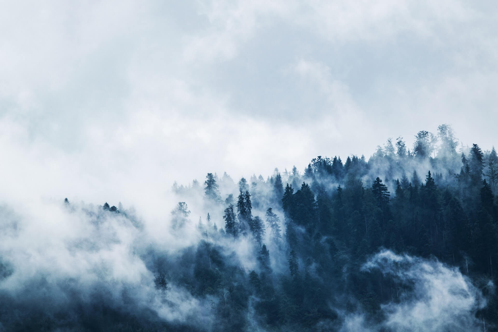
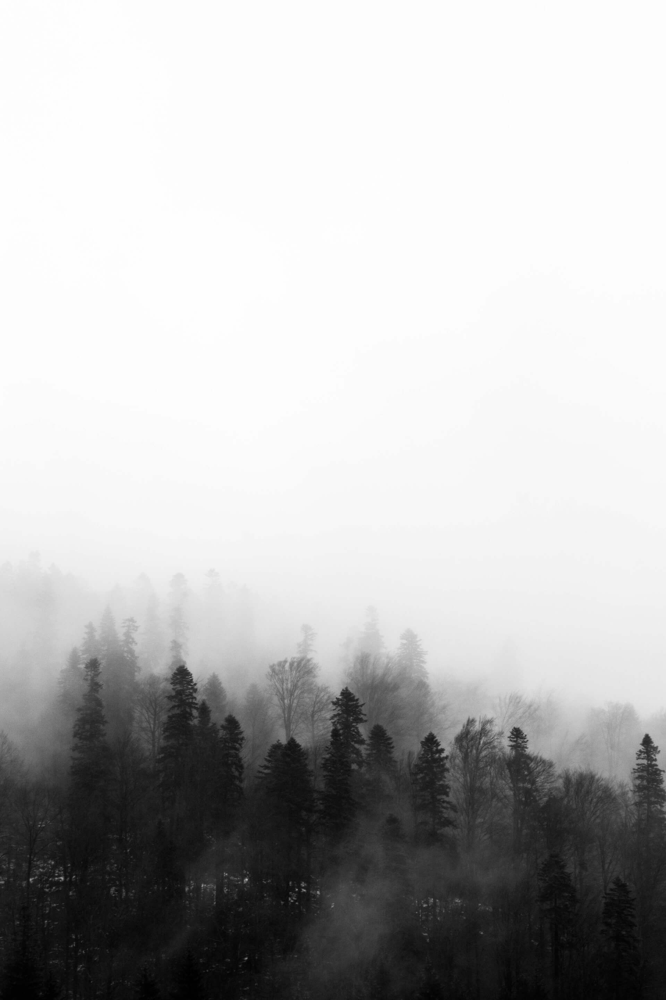
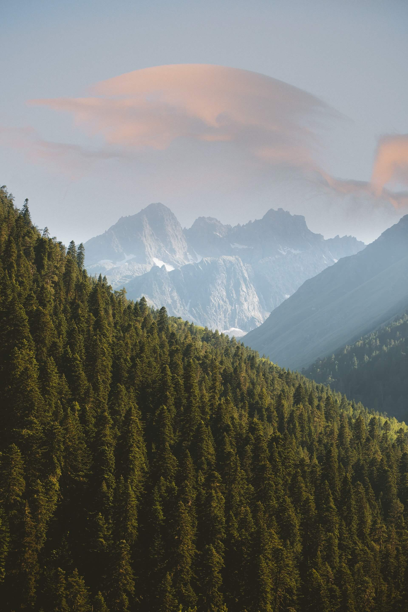
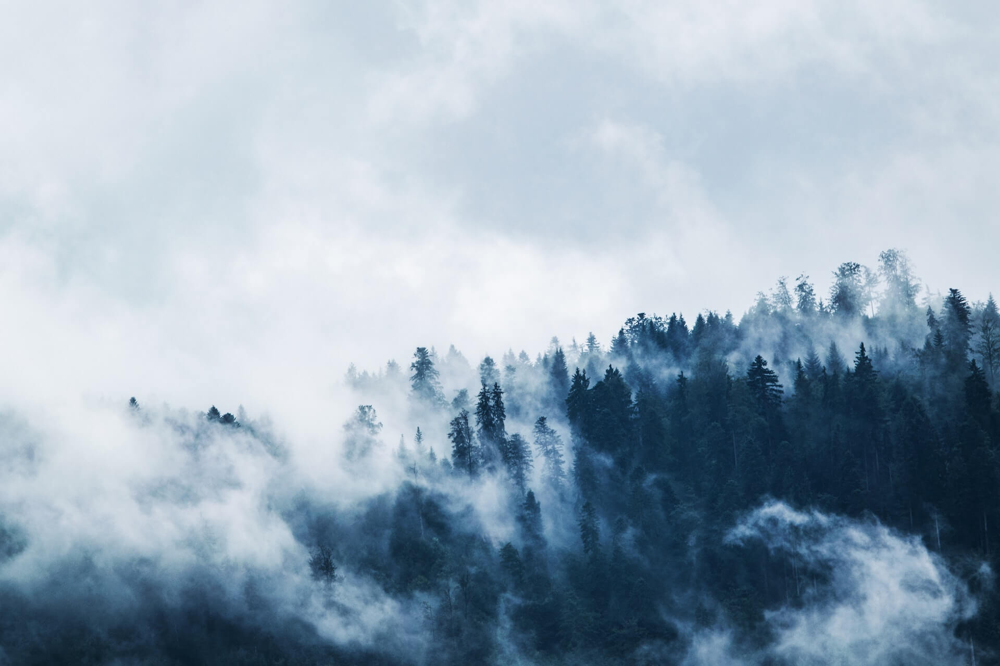
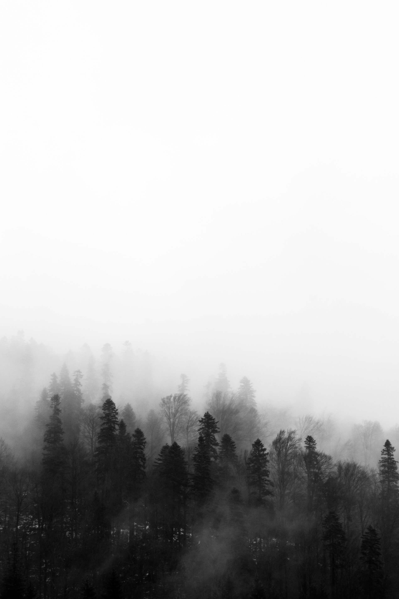
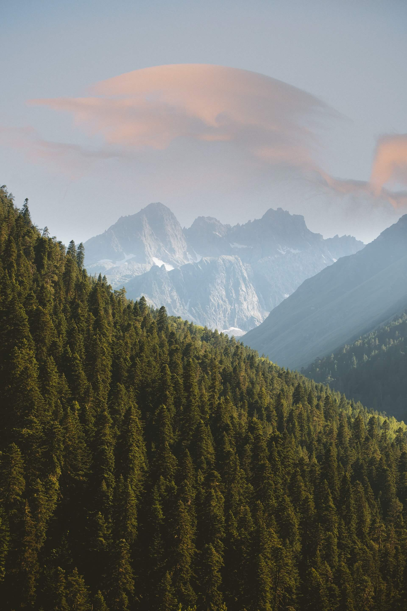

ISTORIJAT I POREKLO
"Kad bi kap vode mogla da objasni svoju istoriju, objasnila bi ceo univerzum."
Hiljadama godina priroda stvara vodu Oaza. Strpljivo je skriva u dubokim slojevima zemlje koji je oplemenjuju svim esencijalnim mineralima. Skrivena u dubinama čvrstih sedimentnih i kvarcnih stena na obroncima Gledićkih planina u srcu Šumadije, mudro skuplja sve minerale koji su potrebni našem telu za bolje zdravlje i kvalitetniji život. Ova jedinstvena SUBARTEŠKA voda, otkrivena je 2001. godine i na osnovu istraživanja i praćenja nepromenljivosti parametara vode, naučno je ustanovljeno da se radi o vodi GLEČERSKOG POREKLA, velike starosti i sa dubine preko 1500 metara. Poreklo, sam kvalitet vode Oaza i način eksploatacije je čine jedinstvenom na našim prostorima, pa se sa pravom svrstava u red najkvalitetnijih svetskih voda, koja se iz dubine prirode, bez ikakve prerade, direktno flašira.
NAŠA VODA
Univerzalni ELIKSIR, zdravlja, života i mladosti! Na dubini od preko 60m, u geografskom srcu Srbije. Netaknuta priroda podarila je sva izuzetna svojstva vodi Oaza. Izvor otkriven pre više od dve decenije, daje vodu vrhunskog kvaliteta, zahvaljujući višegodišnjoj prirodnoj filtraciji kroz slojeve granita i krečnjaka sa obronka Gledićkih planina. Čista voda je svakako najvažniji preduslov zdravog, kvalitetnog i dugog života. Od malog % svetske pijaće vode, samo je 0,26% od te količine dostupno za korišćenje bez ikakve prerade, i spada u IZUZETNO PIJAĆU VODU. U ovaj mali % se ubraja i voda Oaza. Ova voda spada u grupu Glečerskih voda, koje kruže kroz zemljinu koru kao rečne žile, filtriraju se prirodnim putem, prolazeći kroz različite slojeve zemlje (stene, krečnjake) i kao takve stvaraju prirodni mineralni balans. Upravo taj odnos, esencijalnih minerala, promoviše zdrav način života i prirodnu čistoću perfektne mineralne vode.
Zašto Voda Oaza?
"Kada presuše bunari, primetićemo vrednost vode." Benjamin Franklin
NISU SVE VODE STVORENE JEDNAKE. Zahvaljujući dubini njenog izvora, te mineralnom sastavu slojeva zemlje kroz koje prolazi, Oaza ima posebnu čistoću, besprekoran sastav i prepoznatljiv, svilenkast ukus.
 





"Voda je jedna od najproučavanijih supstanci, ali je i dalje najmanje shvaćena... Ništa nije tako kompleksno kao njegovo ponašanje." John Emsley
BENEFITI
Voda Oaza se flašira bez ikakvih fizičkih ili hemijskih tretmana. Kao savršeni proizvod prirode, ona čuva svoj izuzetni sastav nakon prirodnog filtriranja i pakovanja, bez kontakta sa spoljnim svetom. Njen prvi kontakt sa atmosferom jeste, kada se napunjena ambalaža otvori. Sastav vode je idealan za postizanje ravnoteže minerala u telu. Stvara prirodni balans u organizmu i blagotvorno utiče na zdravlje.
UTICAJ NA ORGANIZAM
Ljudi koji imaju razvijenu svest o zdravom načinu života strogo vode računa o tome kakvu vodu piju, naročito o tome kakvu vodu piju njihova deca. Beneficije po zdravlje ove vode su izražene kod fizioloških stanja kada su potrebe organizma za kalcijumom velike, pre svega u periodu trudnoće, dojenja i odrastanja dece kao i kod patoloških stanja kao sto su rahitis kod dece i osteoporoza kod starijih osoba. Na osnovu mišljenja sportskih lekara, zbog brze apsorbacije vode u organizmu, posebno se preporučuje sportistima i osobama koje se izlažu teškim fizičkim naporima. Ovakav odnos minerala u vodi predstavlja prirodno sredstvo protiv nesanice
UTICAJ NA ORGANIZAM
Takodje se može koristiti za ispiranje rana, protiv alergijskih pojava i bitno poboljšava metabolizam. Jedan od aduta ove vode je niska koncentracija natrijuma što je od presudnog značaja za ljude koji pate od povišenog krvnog pritiska i kao prevencija kardiovaskularnih oboljenja koja su na vrhu lestvice u Srbiji. Na osnovu izvršenih analiza vodećih državnih instituta koji su ustanovili da voda ima izvanredne karakteristike kao manji broj voda u svetu preporucujemo Vodu OAZA kao zdravu alternativu jer samo ovakva visokokvalitetna čista voda za piće ima pravo da ponese naziv: UNIVERZALNI ELIKSIR ZDRAVLJA, ŽIVOTA I MLADOSTI.
SVOJSTVA
Unošenje dovoljne količine vode nam pomaže da ostanemo hidrirani i zdravi, a sastav minerala koji se nalazi u vodi Oaza, pruža našem telu mnogo više! Voda OAZA je visokokvalitetna voda za piće, sa odličnim organoleptičkim, fizičko-hemijskim i biološkim karakteristikama. Zahvaljujući idealnom odnosu kalcijuma i magnezijuma, kao i sulfatima sa niskom vrednošću kalijuma i natrijuma voda ima idealno izbalansiran odnos minerala, koji je odličan za pravilan razvoj kostiju kod dece, a kod odraslih pogoduje pravilnom radu srca, smanjuje rizik od infarkta miokarda i supstituiše kalcijum koji se gubi starošću, pušenjem i drugim nezdravim navikama. Magnezijum ima veoma važnu ulogu u vezivanju kalcijuma za kosti i u opuštanju mišića. Takođe učestvuje u regulisanju srčanog ritma i snižavanju nivoa holesterola. Ovaj oligoelement reguliše rad creva, naročitu u slučaju opstipacije. Kod trudnica, on smanjuje opasnost od spontanog pobačaja i prevremenog porođaja.
SPOLJNI FAKTORI
Dubina izvora štiti vodu od izloženosti spoljnih faktora, negativnih, pa čak i ljudskih uticaja. Ovo pominjemo, povedeni "Korona" pandemijom i sumnjajući u dobronamernost ljudskog uma.
VODA I ŽIVOT
Potrebna je za ključne fiziološke procese.
Na svom, hiljadama godina, dugom podzemnom putu, Oaza je prolaskom kroz niz geoloških naslaga, starih milione godina, poprimila izuzetnu, kristalnu bistroću i jedinstven mineralni sastav.
Telo se sastoji od vode.
Ona čini više od 60% tvog tela. Neophodna je za život. Pokreće i poboljšava telesne funkcije. Hidrira i čisti, spolja i iznutra. Voda doprinosi ravnoteži uma i tela. Izaberi Oazu zbog izvanrednog mineralnog sastava, neverovatne čistoće i blagotvornih učinaka. Tvoje telo će ti biti zahvalno.
Voda je izvor života i vitalnosti.
Voda nas pokreće i osigurava normalno odvijanje svih procesa u našem telu. Njenim odgovarajućim unosom doprinećeš postizanju ravnoteže uma i tela. Neophodna je za ključne fiziološke procese. Sudeluje u biohemijskim reakcijama, transportu materije kroz vaskularni sistem, reguliše probavu, pruža potporu zglobovima i štiti tkivo i organe. Voda održava temperaturu tvog tela. Voda je ključan i najzastupljeniji nutrijent u tvom organizmu Zato je veoma važno da svakog dana uneseš dovoljnu količinu vode. Ona je najvažniji deo ishrane, posebno kod detoks dijeta. Uz pravilnu hidrataciju tvoja koža postaje lepša - elastična, čvrsta i gipka.
Preporuke za unos vode
Potrebna količina vode osim što zavisi od životnog doba i pola, zavisi i od drugoh faktora. Trudnoća i laktacija kod žena, kao i ekstremne temperature okoline i povećana telesna aktivnost povećavaju potrebu tela za vodom. Prema Evropskoj agenciji za sigurnost hrane, odgovarajući ukupni unos vode za odrasle osobe iznosi 2L dnevno za žene, te 2.5L za muškarce* Odgovarajuća hidracija neophodna je za normalno funkcionidanje tela, a prirodna mineralna voda Oaza, jedinstvenog mineralnog sastava i besprekorne, iskonske čistoće, vredan je dar prirode, i u njenom izuzetnom kvalitetu možeš uživati svaki dan.
Učenje i posao
Voda doprinosi normalnom odvijanju kognitivnih funkcija, a nedovoljna hidriranost povezana je sa smanjenom koncentracijom, umorom i glavoboljom. Stoga je pravilan unos vode dobar temelj za savladavanje intelektualnih izazova.
Sport i rekreacija
Voda doprinosi normalnom odvijanju telesnih funkcija i termoregulaciji, što je izuzetno važno za sportiste i rekreativce. Vežbanje može višestruko povećati gubitak vode znojenjem, čak i više od 1l na sat.
BLOG
MINERALNI SASTAV VODE I ZAŠTO JE ON VAŽAN?
Voda Oaza spada u izvore kod kojih ljudi nisu imali uticaja kada je nastao vodeni basen i predstavlja pravo blago jer je netaknuti deo prirode koji se eksploatiše.Voda Oaza je deklarisana kao prirodno mineralna voda i kao takva ne sme se pre flaširanja tretirati bilo kakvim hemijskim preparatima, već se od izvora do boce sme samo filtrirati.
Voda Oaza se može flaširati u čistoj, netaknutoj prirodi, upravo na samom izvoru, kako ništa od njenih dragocenih svojstava ne bi bilo iizgubljeno. Vode sa ovog područja spadaju u vode srednje niske mineralizacije, što znači da se mogu piti svakodnevno u neograničenim količinama.
SAVRŠENO IZBALANSIRANI SASTAV MINERALA
Ono što doprinosi optimalnom funkcionisanju organizma i fizioloških procesa, jesu jedinjenja izuzetno karakterističnog hemijskog sastava, odnosno minerali. Organizmu su potrebni za različite funkcije, za rast, razvoj, energiju, proizvodnju hemoglobina, transport kiseonika, izgradnju jakih zuba i kostiju, pravilan rad bubrega, mišića i nerava. Minerali čine 4,5% naše telesne mase, a svaki ima svoju specifičnu funkciju i međusobno su jako povezani. Neki koji su od velikog značaja za nas i naš organizam jesu natrijum, kalijum, kalcijum i magnezijum. Natrijum je esencijalni element zdravlja i funkcionisanja organizma. Kalijum je još jedan mineral koji je potreban organizmu.
Svakodnevnim korišćenjem vode Oaza pospešuju se unutrašnje telesne funkcije, stimuliše imuni, nervni, digestivni i kardiovaskularni sistem i dodatno jača mogućnost regeneracije kože i tela. Najzastupljeniji element u našem organizmu je upravo kalcijum, gde je 99% smešten u kostima, a 1% u mekim tkivima. Kalcijum ima veliku ulogu u funkcionisanju koštano - mišićnog sistema, štiti nas od pada imuniteta i doprinosi izgradnji kostiju i zuba. Važan je za mišićne kontrakcije, prenošenje nervnih signala, ali i za izlučivanje hormona i enzima. Magnezijum takođe utiče na to kako se osećamo i koliko smo zdravi. Sa dovoljnom količinom magnezijuma, stabilizuje nam se raspoloženje, lepše spavamo i energičniji smo. Potreban je srcu, nervima i mišićima, a samim tim i predstavlja veliki doprinos normalnom funkcionisanju metaboličkih procesa u organizmu. Nazivaju ga još i antistresnim mineralom, te nam pomaže u stanjima napetosti i nervoze u optimalnim količinama.
KAKO ODABRATI PRAVU VODU ZA SEBE?
Na deklaraciji flaširane vode ispisan je sastav koji je značajan za naše zdravlje. Međutim, nisu ni sve flaširane vode iste. Ukoliko tražimo vodu koju možemo konzumirati ceo dan, bez ograničenja, onda je važno da bude naznačeno na deklaraciji vode koju unosimo da je voda - niskomineralna, da sadrži nizak procenat natrijuma, dobar odnos kalcijuma i magnezijuma i ostalih makro i mikroelemenata.
ZAŠTO?
Niskomineralne vode ne opterećuju organizam, brzo se apsorbuju, pomažu bržu hidrataciju i podstiču razmenu u organizmu. U sastavu vode najvažnije je to da svi elementi i minerali deluju sinergetski. Kalcijum i magnezijum treba da budu u odnosu koji je najpoželjniji za naše telo jer tako izbalansirani mogu da deluju sinergetski i da utiču na sve enzimske reakcije u organizmu, tačnije da se apsorbuju i da utiču na mišiće i kosti. Baš zbog odličnog odnosa Ca i Mg, voda Oaza se preporučuje za konzumaciju i kod dece i kod odraslih, jer podstiče pravilan razvoj kostiju i utiče i na pravilan rad srca. S obzirom da je niskomineralna, vodu Oazu mogu bez brige o ograničenju u konzumaciji koristiti i trudnice, ali i bebe i mala deca.
ZNAČAJ VODE ZA TRUDNICE I PORODILJE?
Kao što već svi znamo, voda je jedina i najvažnija supstanca na planeti bez koje ne možemo. U vodi je nastao život, sa njom započinjemo svoj dan, uz nju održavamo svoj organizam. Nezavisno od perioda života u kom se nalazimo, svesni smo značaja hidratacije i unošenja dovoljne količine tečnosti kako za starije, tako i za mališane, posebno za njihov rast i razvoj. Kao i zdrava ishrana, voda je neophodna za zdravo odrastanje dece. Ukoliko se pitate da li postoji ograničenje u dnevnom unosu Oaza vode kod dece, imamo dobre vesti. Voda Oaza sadrži dovoljno minerala potrebnih za dobro svakodnevno funkcionisanje organizma, ali takođe spada u niskomineralne vode, što je od posebnog značaja, jer jedino niskomineralne vode mogu konzumirati odrasli, deca pa čak i trudnice u neograničenim količinama.
VAŽNOST ODABIRA PRAVE VODE ZA TRUDNICE I PORODILJE?
Iako je voda neophodna za sve uzraste, poseban značaj i pažnju treba usmeriti na buduće mame, kao i na porodilje, kod kojih voda ima važnu i značajnu ulogu za rast bebe, obzirom da doprinosi njenoj dobroj hidrataciji i snabdevanju nutrijentima. Zbog svih promena koje se odvijaju u telu trudnica, konzumacija vode olakšava većinu simptoma drugog stanja, kako psihičkih, tako i fizičkih. Ukoliko se pije dovoljna količina vode, lice ostaje hidrirano i sveže, a koža mekana i sjajna.
Nakon porođaja, izuzetno je važno da se majke posvete zdravom načinu života, regulisanoj ishrani, a i unosu dovoljne količine vode. Voda podstičući proizvodnju mleka i utičući na kvalitet istog, predstavlja suštinski faktor u prehrani bebe. Iz tog razloga, neophodan je njen unos tokom dojenja ne bi li se vaše dete normalno razvijalo i zdravo raslo. Voda Oaza se može flaširati na samom izvoru, kako ništa od njenih dragocenih svojstava ne bi bilo izgubljeno, odnosno kako bi magnezijum odigravao svoju ulogu u biološkim reakcijama, a kalcijum omogućavao prenos nervnih impulsa i kontrolu mišićnih kontrakcija.
Preporuke za unos vode
Potrebna količina vode osim što zavisi od životnog doba i pola, zavisi i od drugoh faktora. Trudnoća i laktacija kod žena, kao i ekstremne temperature okoline i povećana telesna aktivnost povećavaju potrebu tela za vodom. Prema Evropskoj agenciji za sigurnost hrane, odgovarajući ukupni unos vode za odrasle osobe iznosi 2L dnevno za žene, te 2.5L za muškarce* Odgovarajuća hidracija neophodna je za normalno funkcionidanje tela, a prirodna mineralna voda Oaza, jedinstvenog mineralnog sastava i besprekorne, iskonske čistoće, vredan je dar prirode, i u njenom izuzetnom kvalitetu možeš uživati svaki dan.
KOLIKO VODE (ZAISTA) TREBA PITI DNEVNO?
Količinu vode koju je potrebno piti u toku dana zavisi od više različitih faktora kao što su pol, starost, podneblje, ishrana, fizička aktivnost, zdravstveno stanje. Okvirna preporuka je između 8 i 15 čaša dnevno vode bez ograničenja u konzumaciji, odnosno niskomineralnih voda. Voda Oaza zahvaljujući svom sastavu jedna je od tih, niskomineralnih voda, u kojoj možete uživati ceo dan bez ograničenja, pa čak i tokom trudnoće. Ukoliko trenirate, potrebno je napraviti optimalan raspored konzumacije vode u toku dana. Za vreme treninga, na svakih 15 - 20 minuta bi trebalo piti 100 - 250ml vode, a nakon fizičke aktivnosti, na svakih sat vremena od 400 - 450 ml, u zavisnosti od njene jačine i dužine. Tokom fizičke aktivnosti telo gubi vodu, te je važno obezbediti telu dovoljno hidratacije kako bi trening bio delotvoran na ceo organizam.